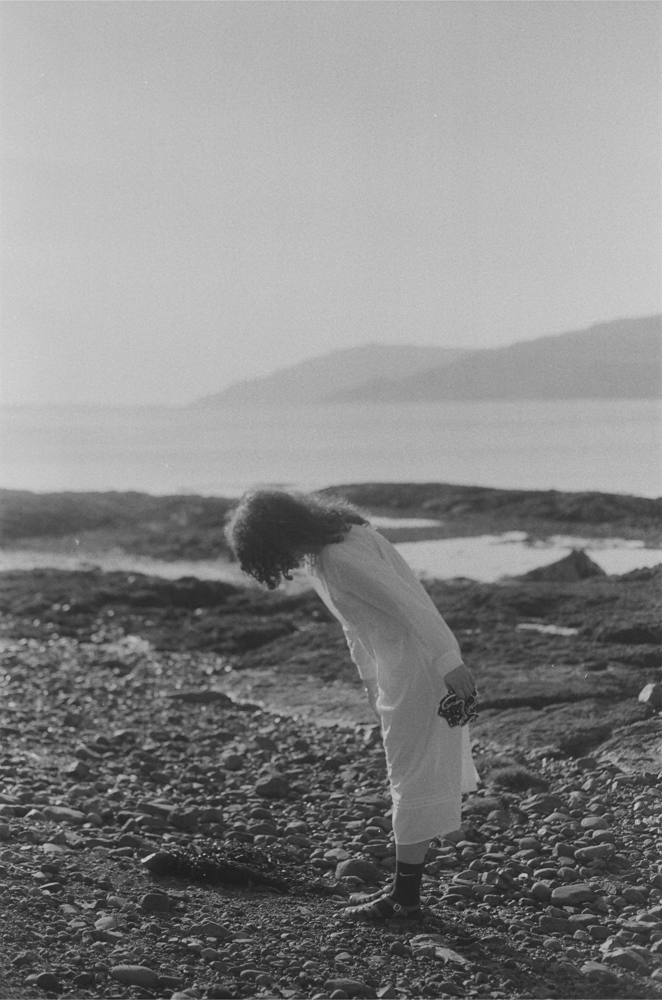

In etymology, tumulus denotes an earth mound over a prehistoric tomb. In
Turkish, it is called Tümülüs, Höyük, and Kurgan, terms also common in Central
Asia. In the UK, a Tumulus is called a cairn, which comes from a Gaelic term
meaning heap of stones (Drummond, 2007, p. 26). Beyond the archaeological
value of an ancient grave of an affluent family, this project focuses on field notes
that address the entanglement of multispecies and ecosemiotics of the tumulus
landscapes while incorporating elements of queer ecology, archaeology, and
cyberfeminist web archaeology.
For this practice-based research, I developed a Space Tumulus (ST) 'handmade
web' (Carpenter, 2015), informed by J.R. Carpenter's poetic web, that
incorporates intersectionality, queer ecology, archaeology, and web archaeology
areas historically colonised by a Western binary perspective on material
semiotics. I devised a research methodology, un/digging, which opposes colonial
archaeology, influenced by Undoing the Future (Faculty of Arts, Aarhus
Universitet, 2016), authored by Karen Barad. Un/digging counters colonial
archaeology, which historically legitimises colonialism and perpetuates sexist
and racist narratives (e.g., phrenology). Colonial archaeology’s practices include
digging, disturbing, destroying, misinterpreting, and misrepresenting past life
forms and societies. In contrast, un/digging methodology is informed by
Indigenous Archaeology as a decolonising and queering practice. Additionally,
indigenous futurism, a subgenre of cyberfeminism, forms and informs the ST
website.
For the Un/digging Space Tumulus research project, I employ a series of
methods and techniques that contrast with the traditional archaeological
method of digging. Instead, un/digging methodology is applied by the methods
of embodied multi-sensory field notes at the prehistoric tumuli landscapes in
Scotland and Türkiye. These field notes involve observation, seeding, walking,
and multimedia recording (video, photography), alongside olfactory and auditory
sensory engagement. These field notes are subsequently reinterpreted in
physical/cyberspace, utilising poetic narratives crafted with ASCII, GIF, HTML and CSS. All the collected field notes from the tumulus landscapes are located on
the ST website, which serves as a platform for the dissemination and discussion
of the research findings. The website is focused on embodied queer, indigenous,
eco-semiotic poetic narratives. These collected/grown eco-semiotic materials,
such as mycelium, natural fibres, seeds, and olfactory and auditory stimuli,
represent the temporality of the entangled spacetime garden and grave in the
tumulus cybersite. These future-present eco-facts and burial grave goods speak
to the conditions of death, decay, time, and space in relation to the temporality
of the material-immaterial.
The ST website prompts the audience to consider if the sensorial qualities of
ecofacts' memory can surpass mediums, igniting awareness of our profound
relationship to the landscape. This thesis asks: How might queer ecology trouble
colonial archaeology through art practice? How does embodied multi-sensory
fieldwork undo colonial archaeology and decode queer ecology in the cyber/IRL
(nature) space? How can ST produce knowledge and practice in an effort to
reshape the future-present poetically as a world-building practice? By
considering and responding to the research questions, this cross-disciplinary
research contributes to decolonising studies in the fields of art, archaeology, and
cyberfeminism through a queer ecological lens with an emphasis on love, care,
and intra-action. (Barad, 2007).
cc özdoğan
𐇣